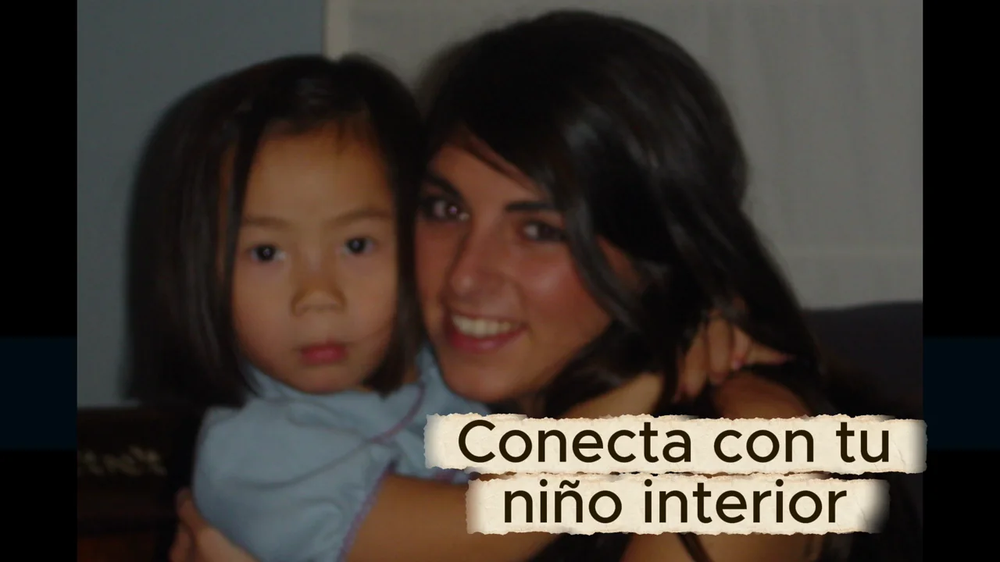

Meditación guiada: conecta con tu niño interior
Una meditación en audio de Alejandra Salama para conectar con tu niño interior. Escúchala completa y a tu ritmo.

Escucha la práctica completa
Audio de Alejandra Salama Monsalve · 11 min 28 s
Un momento para ti
Esta práctica te propone un espacio de escucha para conectar con tu niño interior. Puedes reproducir el audio aquí, detenerlo cuando lo necesites y retomarlo a tu ritmo.
Busca un momento y un lugar donde puedas escuchar con comodidad. El reproductor te permite pausar, avanzar y volver a empezar.
Conoce el camino de Alejandra y descubre todas las meditaciones y prácticas gratuitas.
Antes de empezar
Elige un lugar donde puedas escuchar sin tener que atender otra tarea. Puedes mantener los ojos abiertos, pausar o dejar la práctica para otro momento. No tienes que provocar ningún recuerdo ni sentir algo concreto.
Al terminar
Date un momento antes de volver a lo siguiente. Si te apetece escribir, prueba con «¿Qué necesito tratar con más amabilidad hoy?». Es una invitación personal, no una técnica para recuperar recuerdos ni sustituir una terapia.
Encontrarás más propuestas en Ejercicios para volver a conectar contigo misma.